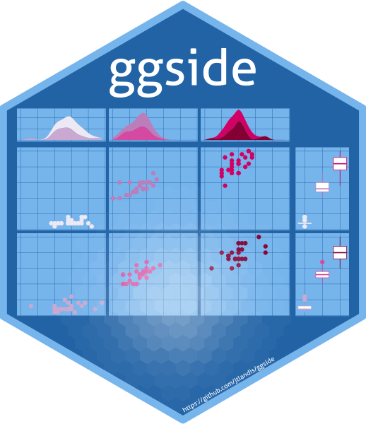
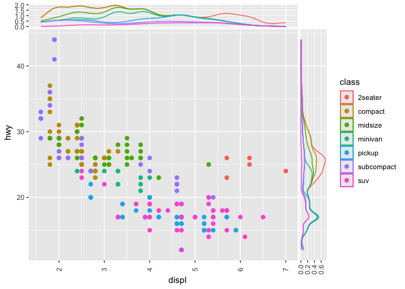
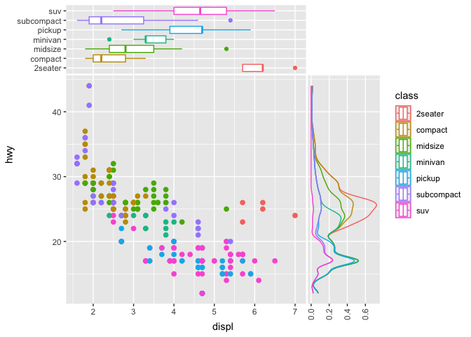
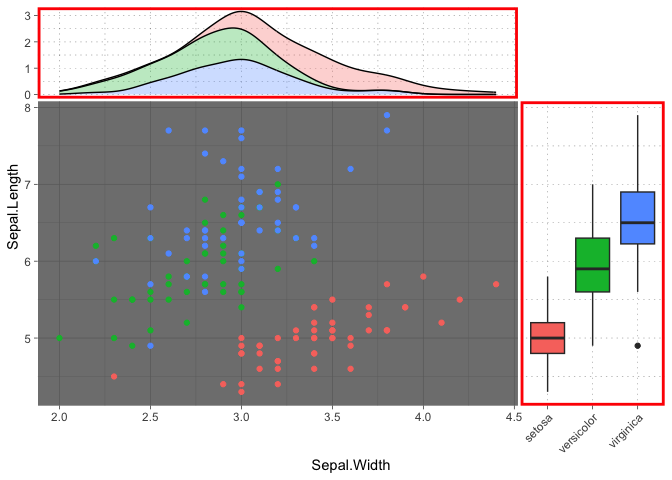

ggside 
The R package ggside expands on the ggplot2 package. This package allows the user to add graphical information about one of the main panel’s axis. This is particularly useful for metadata for discrete axis, or summary graphics on a continuous axis such as a boxplot or a density distribution.
Installation
Please install from CRAN for the latest stable version of ggside. You can also install from the Github as seen below.
#CRAN
utils::install.packages("ggside")
#Github
devtools::install_github("jtlandis/ggside")Usage
Using this package is similar to adding any additional layer to a ggplot. All geometries supported by ggside follow a pattern like geom_xside* or geom_yside* which will add that geometry to either the x side panel or the y side panel respectively. If you add geom_xsidedensity to a plot, then this places a density geometry in its own panel that is positioned by default above the main panel. This panel will share the same x axis of the main panel but will have an independent y axis. Take the following example from the ggplot2 readme.
library(ggplot2)
library(ggside)
ggplot(mpg, aes(displ, hwy, colour = class)) +
geom_point(size = 2) +
geom_xsidedensity(aes(y = after_stat(density)), position = "stack") +
geom_ysidedensity(aes(x = after_stat(density)), position = "stack") +
theme(axis.text.x = element_text(angle = 90, vjust = .5))
After version 0.3.0 you no longer need to use scale_(y|x)side(x|y)_*() to mix discrete and continuous axes. ggside geom’s have their default positional aesthetics x and y aesthetics to be prepended with ysidex and xsidey respectively under the hood. Now you may mix discrete and continuous axes with ease.
ggplot(mpg, aes(displ, hwy, colour = class)) +
geom_point(size = 2) +
geom_xsideboxplot(aes(y =class), orientation = "y") +
geom_ysidedensity(aes(x = after_stat(density)), position = "stack") +
scale_ysidex_continuous(guide = guide_axis(angle = 90), minor_breaks = NULL) +
theme(ggside.panel.scale = .3)
With version 0.2.0, more theme elements allow for better control over how side panels are rendered.
ggplot(iris, aes(Sepal.Width, Sepal.Length, fill = Species)) +
geom_point(aes(color = Species)) +
geom_xsidedensity(alpha = .3, position = "stack") +
geom_ysideboxplot(aes(x = Species), orientation = "x") +
scale_ysidex_discrete(guide = guide_axis(angle = 45)) +
theme_dark() +
theme(ggside.panel.scale = .3,
ggside.panel.border = element_rect(NA, "red", linewidth = 2),
ggside.panel.grid = element_line("black", linewidth = .1, linetype = "dotted"),
ggside.panel.background = element_blank()) +
guides(color = "none", fill = "none")
For a more detailed guide please see vignette('ggside_basic_usage') for more information.
Issues and Bug Reporting
If you find any issues or want to suggest an enhancement, please make a post at jtlandis/ggside.
Known Issues
The following section will summarize issues that are present on the current CRAN release. These will either be fixed on the main branch of this git repository, or currently in development to be fixed on one of the development branches. The current CRAN version of ggside is v0.4.0.
-
When using layer that requires its some positional scale on the main panel to be computed later, but the same positional scale is present on the parallel side layer that is meant to be discrete, you may see a warning and the data may be missing. Below is an example:
ggplot(iris, aes(Sepal.Width)) + # main panel y scale initializes later geom_density() + # xsidey scale is discrete but misses initial training geom_xsidepoint(aes(y = Species))To remedy this, please explicity declare the scale for the main panels:
ggplot(iris, aes(Sepal.Width)) + geom_density() + geom_xsidepoint(aes(y = Species)) + scale_y_continuous()